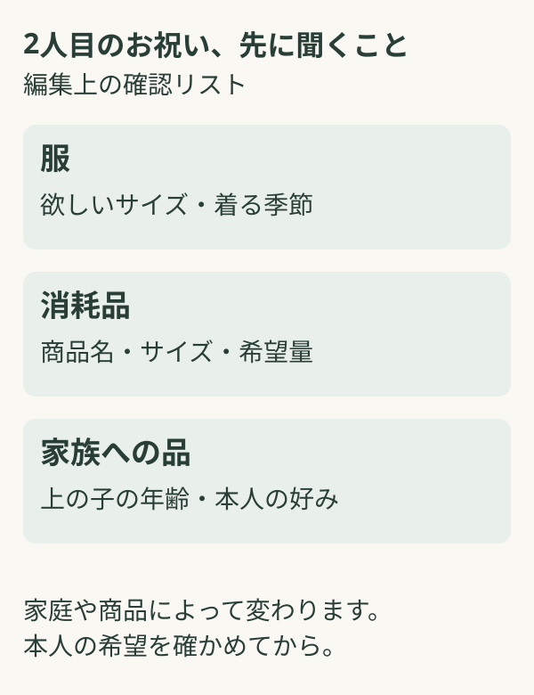

2人目のお祝いでは、上の子の服やおもちゃが残っているかもしれません。持っているものと、今必要なものを聞いてから選ぶと、重複を避けやすくなります。

服や大きな用品は、先にひとこと
服は「何cmなら安心」と決めず、希望サイズと着る季節を確認しましょう。たとえば「夏に着る服を贈りたいけれど、欲しいサイズはある？」と聞けます。ベビーカーやバウンサーも、置き場所や好みを本人に確認してから。
使うものを、使える形で
おむつなら、使っているメーカー・商品名・サイズ・テープかパンツかを聞きます。メーカーのサイズ表示も確認しましょう。パンパース公式では、体重を目安にしつつ、体型やフィット感も確認するよう案内しています。[1]
ギフトカードは、相手が使う店、利用条件、有効期限を確認して選びます。食べ物なら、苦手なものと保存場所を先に聞き、大量に送りすぎないようにします。
上の子にも小さな気持ちを
上の子への贈り物を添えるなら、年齢と好きなものを聞いて選びましょう。シールブックや絵本などは候補ですが、必ず喜ばれるという意味ではありません。
予算は、返礼の負担も考えて
金額の相場を一律に決めるより、関係性やこれまでのやり取りを目安に。友人同士でまとめて贈る場合も、本人の希望を一度聞くと選びやすくなります。
送る前の確認
持っているものと重ならないか。サイズ・季節は合うか。保存や収納に困らないか。利用条件は合うか。ひとつでも迷ったら、本人に聞いてから選びましょう。
よくある質問
希望を聞くとサプライズになりませんか？
品物を決める前に、欲しいジャンルや避けたいものだけ聞く方法もあります。相手が答えやすい範囲で確認しましょう。
希望が分からない場合は？
大きいものや肌に使うものをこちらだけで決めず、本人が使う店のギフトカードなども含めて相談できます。利用条件や期限は購入前に確認しましょう。
参考にした一次情報
[1] パンパース公式「おむつのサイズと体重の変化」。体重だけでなく体型やフィット感も確認する説明を参照。確認日：2026年10月11日。